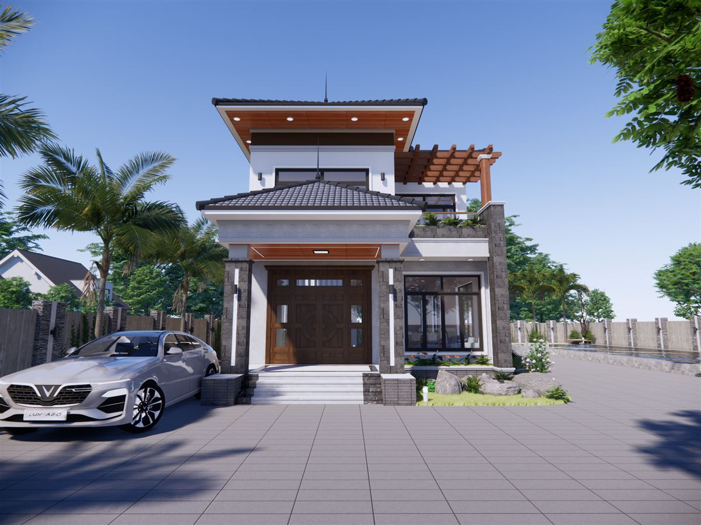
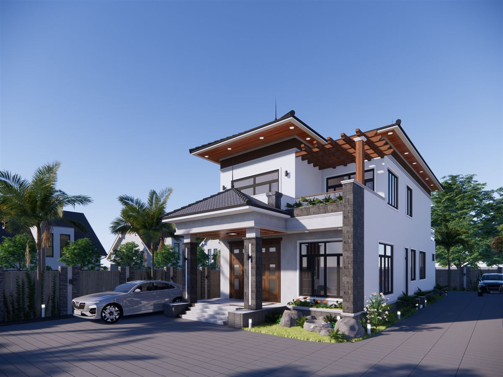
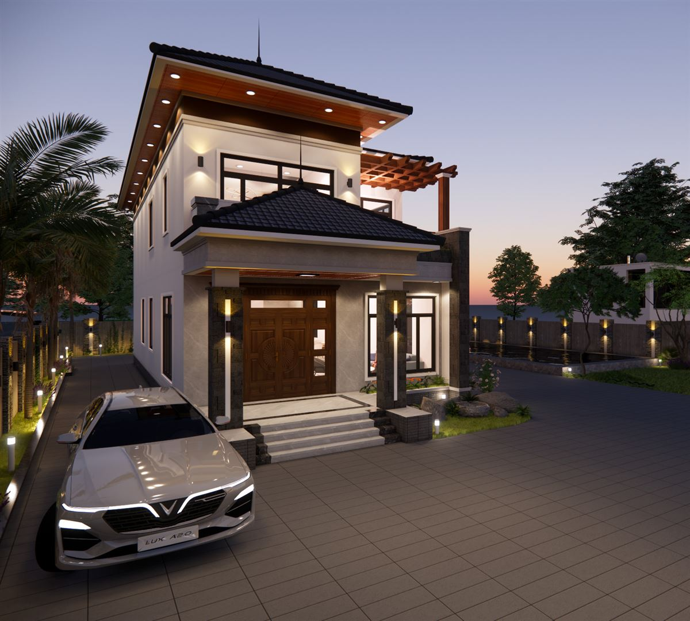
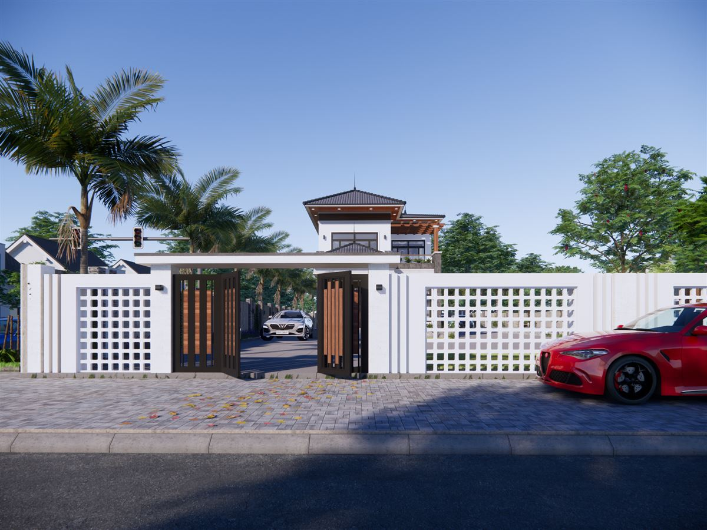
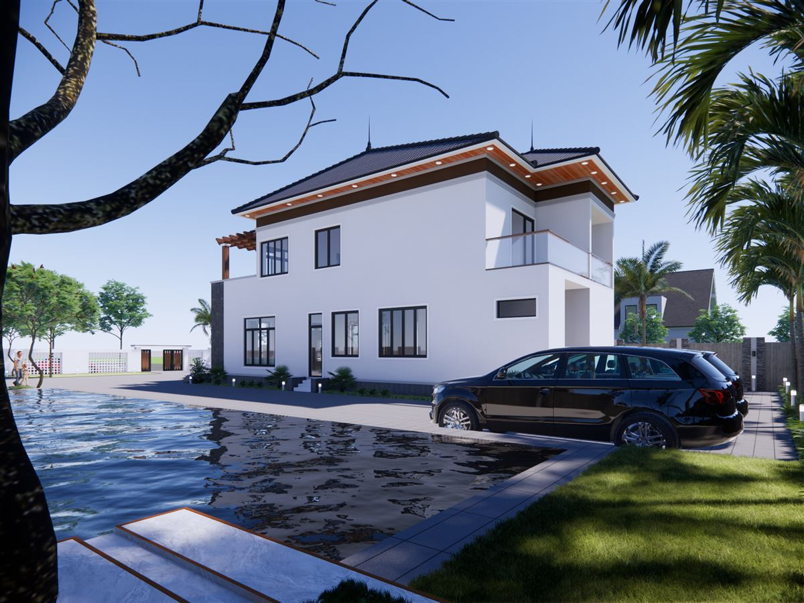
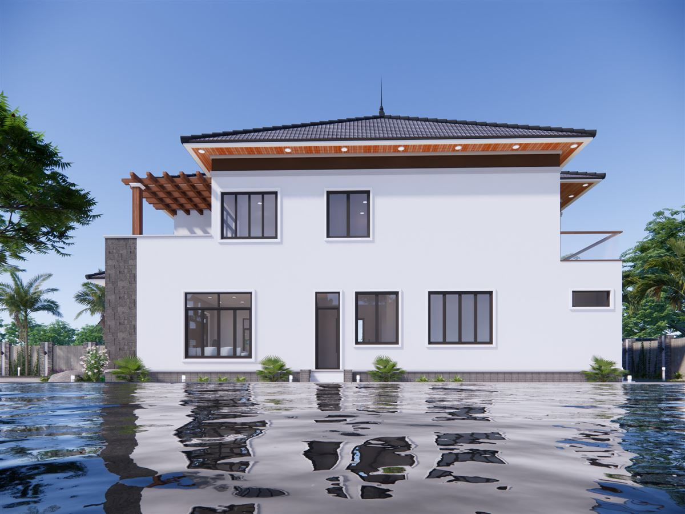

Mẫu biệt thự 2 tầng hiện đại mái dốc, giàn gỗ và sân rộng
Đây là mẫu biệt thự 2 tầng hiện đại do Đại Phát Decor dựng phối cảnh 3D, với mái dốc nhiều lớp, trần mái ốp màu gỗ và một giàn gỗ bên hông. Bài viết đi qua từng góc nhìn ban ngày và ban đêm để anh chị thấy rõ cách phối khối, vật liệu và ánh sáng, từ đó có thêm ý tưởng khi tính làm nhà trên lô đất rộng.

Mẫu biệt thự 2 tầng hiện đại này có bố cục ra sao?
Nhìn từ phía trước, khối nhà chia thành hai lớp rõ ràng. Lớp trước là sảnh với mái ngói riêng, hai bên có cột, ở giữa là cửa đi màu gỗ lớn. Lớp sau là thân nhà tầng hai màu trắng, mái dốc vươn ra xa, mặt dưới mái ốp màu gỗ. Cách xếp này giúp nhà có chiều sâu, không bị phẳng dù mặt tiền khá gọn.
Mái ngói xám sẫm, tường trắng và mảng gỗ ấm là ba màu chính. Đây là cách phối đơn giản nhưng dễ giữ được vẻ hiện đại, vì không có nhiều chi tiết trang trí đắp lên tường.

Vật liệu: mái ngói, giàn gỗ và mảng ốp đá
Điểm khiến mẫu nhà có điểm nhấn là giàn gỗ ở tầng trên, kết hợp với một mảng tường ốp đá xếp màu tối chạy dọc thân nhà. Ở tầng dưới, hàng cửa kính khung đen tiếp nối ngôn ngữ đó. Phần chân sảnh và bồn cây phía trước có đá tự nhiên và cây xanh, làm mềm góc tiếp giáp giữa nhà và sân.
Trong phối cảnh, các vật liệu chỉ thể hiện hình thức bên ngoài. Khi đưa vào hồ sơ thi công, cần ghi rõ loại vật liệu thật và cách liên kết, nhất là ở giàn gỗ để ngoài trời và mảng ốp đá, vì đây là những chỗ chịu mưa nắng trực tiếp.
Biệt thự 2 tầng lúc lên đèn
Phối cảnh chiều tối cho thấy đèn được bố trí ở dưới mái, ở hai bên sảnh và sát chân tường. Ánh sáng ấm hắt lên mảng trần gỗ nên đường mái hiện rất rõ trên nền trời. Nếu thích hiệu ứng này, anh chị nên tính sẵn đường điện cho đèn từ lúc làm hồ sơ điện, thay vì đợi đến lúc hoàn thiện mới đi dây.

Cổng, tường rào và sân
Từ ngoài đường, nhà lùi sâu phía sau một tường rào trắng có các mảng hoa gió và cổng màu gỗ. Bên trong là sân lát nền rộng, trong phối cảnh có ô tô đỗ ngay trước sảnh. Một số góc phối cảnh phía bên hông còn có mặt nước, tạo khoảng nhìn rộng cho các phòng phía đó. Mặt bên nhà khá phẳng, trắng, ít chi tiết, để mái và phần giàn gỗ giữ vai trò chính.



Ai nên tham khảo mẫu này?
Mẫu nhà hợp với những gia đình có đất rộng và muốn có sân, chỗ để xe và không gian xanh quanh nhà. Nếu đất nhỏ hơn, vẫn có thể giữ lại tinh thần của mẫu, như mái dốc, trần màu gỗ, mảng ốp đá, rồi điều chỉnh khối nhà. Diện tích, số phòng và chi phí không thể suy ra từ ảnh phối cảnh, nên cần tính lại theo đất thật. Anh chị có thể xem cách tính chi phí thiết kế trước khi trao đổi.
Câu hỏi thường gặp
Biệt thự 2 tầng có cần sân rộng như trong phối cảnh không?
Không bắt buộc. Phối cảnh thể hiện một phương án có sân rộng. Với đất nhỏ hơn, có thể thu sân và chỉnh lại khối nhà, nhưng cần làm lại mặt bằng theo kích thước thật.
Giàn gỗ và ốp đá có thay bằng vật liệu khác được không?
Được. Chất liệu thật có thể chọn theo ngân sách và điều kiện địa phương. Nên chốt vật liệu trước khi lập dự toán để con số sát hơn.
Muốn có mẫu tương tự thì cần gửi gì?
Anh chị gửi kích thước đất, hướng nhà, số phòng mong muốn và ảnh mẫu thích qua Zalo 0979 597 679 để được tư vấn và báo giá.
Mẫu liên quan
- Mẫu biệt thự 3 tầng nhiều phương án mái
- Mẫu nhà vườn hiện đại sân đá xen cỏ
- Nhà vườn mái ngói đỏ đầu hồi vòm xám
Xem thêm các mẫu khác
- Thiết kế nhà cấp 4 mái thái có sân trước, tường rào hoa gió
- Mẫu nhà phố góc 2 mặt tiền hiện đại
- Dịch vụ thiết kế nhà phố, nhà cấp 4, biệt thự của Đại Phát Decor
Muốn có phương án tương tự?
Gửi kích thước đất và mong muốn, Đại Phát Decor sẽ trao đổi phương án và báo giá.